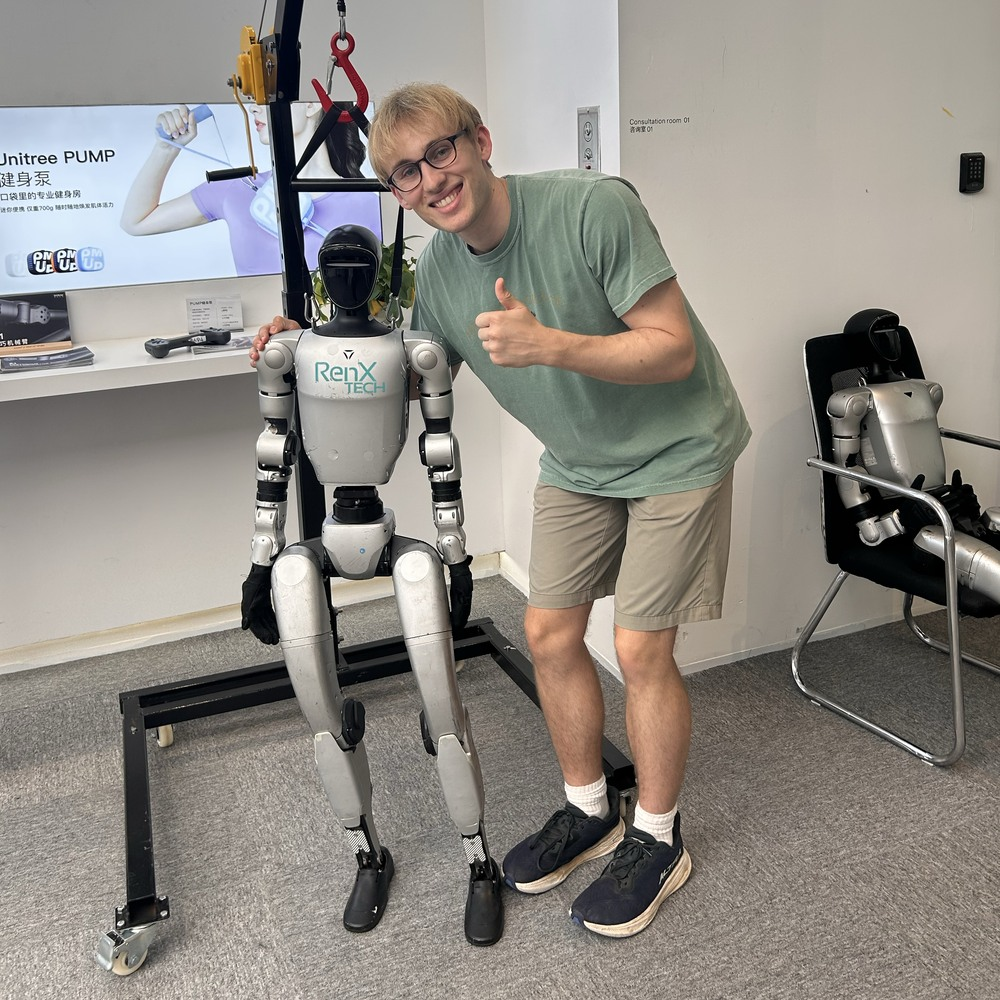

Hi, I’m Will.
I’m a PhD student in pure mathematics at Dartmouth College, advised by Juliette Bruce and Asher Auel.
My mathematical research is at the intersection of algebraic geometry and commutative algebra. I use numerical invariants (like Hilbert functions) to study the geometry of solution sets to systems of polynomial equations. I am also interested in singular learning theory, AI alignment, and mechanistic interpretability.
